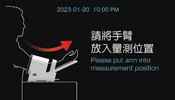

福爾 P1000 隧道式血壓計
社區據點操作指南
標準量測流程 (使用健保卡或身分證)
請個案在椅子上舒適坐下，放鬆休息至少 5-10 分鐘。
將個案的
健保卡
插入 P1000 右側的讀卡機，或使用掃描器掃描
身分證背面
的一維條碼。
請個案將手臂（左臂或右臂）伸入壓脈帶中，手肘貼緊手臂架，
掌心朝上
。
 (此處預留圖片位置：請放上手臂正確放置的示意圖)
按下「開始/停止」按鍵，提醒個案在量測過程中
保持靜止、不要移動或說話
。
量測完成後，壓脈帶會自動洩氣，螢幕會顯示血壓與脈搏數值。
請個案將手臂收回，並取回健保卡。
狀況排除：個案忘記帶卡
若個案未攜帶健保卡或身分證，請使用以下工具產生條碼，再讓 P1000 掃描。
1. 從列表快速選擇個案 (會自動填入ID)
— 請選擇個案 —
陳 O 憶 (A123456789)
林 O 禎 (F234567890)
張 O 華 (H123456789)
李 O 麗 (Q234567890)
2. 或手動輸入身分證字號
產生條碼
請使用P1000掃描此螢幕條碼
(此處預留圖片位置：請放上P1000掃描器對準螢幕條碼的示意圖)
返回個案管理系統
量測資料上傳後，可點此返回主系統查看。
前往 首頁
 (此處預留圖片位置：請放上P1000掃描器對準螢幕條碼的示意圖)
(此處預留圖片位置：請放上P1000掃描器對準螢幕條碼的示意圖)
(此處預留圖片位置：請放上P1000掃描器對準螢幕條碼的示意圖)
(此處預留圖片位置：請放上P1000掃描器對準螢幕條碼的示意圖)